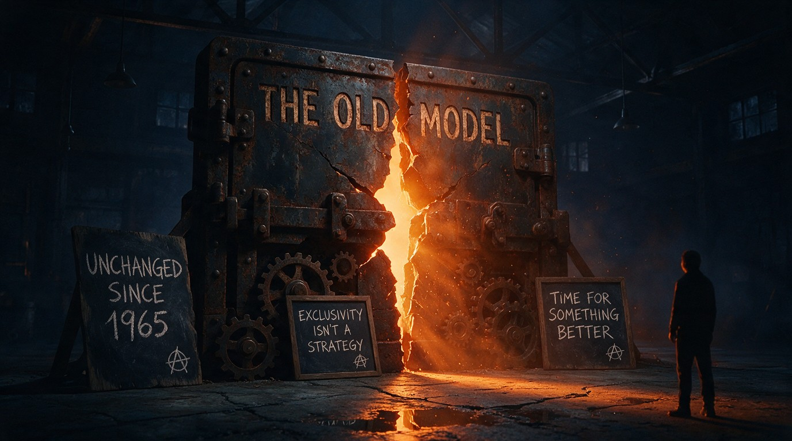

Book a Call with Neil
Book a Call with NeilThe recruitment model is overdue
a rethink.
A response to a candid post about exclusivity and the case for changing a model that has barely moved in over half a century.

Unchanged since 1965. Exclusivity isn’t a strategy. Time for something better.
A recent post making an honest case for exclusivity got the economics right and it is worth saying so plainly.
Contingent recruitment means an agency works for free until a candidate is in the seat and the standard fee sits at roughly 15 to 25 per cent of first year salary, paid only after a candidate is successfully placed. When a client splits a role across several agencies and pushes for lower fees at the same time, each recruiter’s odds of being paid drop, so the role naturally slides down the priority list. That is commercial sense, not spite.
The argument is told from one side of the table.
It asks how clients should behave, but it does not really ask what the client wants and it barely mentions the candidate, who is the person whose career is actually on the line. If we are going to be honest, we should be honest about all three.
The way we work is older than most of the people doing it.
The modern recruiting industry is most often traced to the 1940s and the labour shortages of the Second World War, though you will find sources that point further back. Through the following decades, it professionalised. Internal human resources teams appeared in the 1950s and 1960s and recruiters began to specialise by industry and job function as the field matured.
The contingent and permanent placement model we still argue about today is essentially that structure. By any reasonable reading, the core commercial model is more than fifty years old and its basic shape has changed remarkably little.
The tools were transformed. The model was not.
The first applicant tracking systems are commonly dated to the late 1990s and were installed on company servers, although more basic computerised tools existed in the decades before that. Job boards such as Monster and CareerBuilder appeared in the same period, LinkedIn launched in 2003 and cloud-based systems widened access through the 2010s. Today the large majority of big employers run a tracking system, with estimates commonly placed above 90 per cent.
And the pace is accelerating. A 2025 survey by SHRM of more than two thousand HR professionals found that 43 per cent of organisations now use AI in HR tasks, up from 26 per cent the year before, with 51 per cent using it to support recruiting. A separate vendor survey by HireVue, covering more than four thousand HR leaders, put adoption higher still at 72 per cent in 2025, which is worth reading with the source in mind.
This is a vast market, organised around a world of newspaper adverts.
The global staffing industry was worth around 619 billion dollars in 2024 and the United States market alone was estimated by Staffing Industry Analysts at roughly 178 billion dollars in 2025, with other bodies measuring it differently depending on what they count. This is not a niche cottage industry.
The same technology that promises efficiency is creating new friction with the very people we serve. Pew Research found that 66 per cent of Americans would not want to apply for a job with an employer that uses AI to help make hiring decisions. Candidates are wary of exactly the tools the industry is rushing to adopt. Bolt new technology onto an old model without rethinking the relationship and we simply speed up a process people already distrust.
Defending the old rules more loudly is not the same as fixing them.
Exclusivity can be the right answer in many cases and the original post made that case well. But exclusivity protects the recruiter’s economics. It does not automatically improve what the client gets or how the candidate is treated.
I will be honest about my own behaviour too. When I know I am competing against three other agencies, I often move faster and work harder, because I can see the gap and I want the win. Competition does not always destroy service. Sometimes it sharpens it. That tells me the real problem is not simply that clients use more than one agency. It is a model whose incentives, fees and ways of working were set decades ago and have never been honestly redesigned around what clients and candidates need now.
Who is going to drive this change.
I would rather help build the next version than spend another decade defending the last one. Who wants to actually drive the change rather than just talk about it? Who feels the same and is ready to build something better for clients, candidates and recruiters?
Industry origins and professionalisation · RecruitingDaily; CPS Inc.; Workfully.
Applicant tracking systems and job boards · SAP; Gem; Shortlister.
ATS adoption estimate · secondary industry estimate, treated as approximate.
AI adoption · SHRM 2025 HR survey, as reported; HireVue vendor survey 2025.
Market size · Staffing Industry Analysts (global 2024 and US 2025 estimates).
Candidate sentiment · Pew Research Center, on AI in hiring decisions.